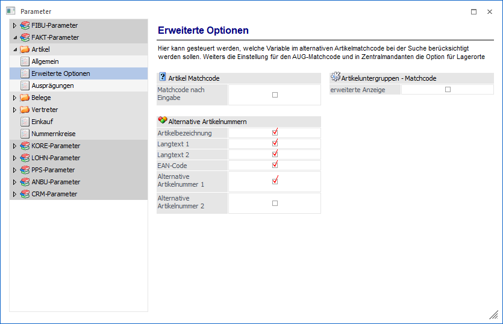
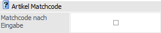
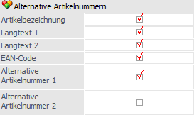
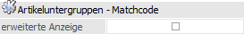
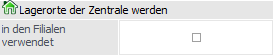

Über den Bereich "FAKT-Parameter - Artikel - Erweiterte Optionen" können u.a. allgemeine Einstellungen für den Artikelmatchcode (Register "Alternative Artikelnr.") vorgenommen werden.
Hinweis
Standardmäßig wird das Fenster in einem "Lesemodus" geöffnet, d.h. es können die bestehenden Einstellungen kontrolliert, Änderungen allerdings nicht durchgeführt werden. Hierfür muss zunächst mit Hilfe des Buttons "Bearbeiten" der "Bearbeitungsmodus" aktiviert werden. Alternativ kann diese Aktivierung auch über das Kontextmenü der rechten Maustaste (Funktion "Applikation xxx bearbeiten") erfolgen.

Die Identifikation der Artikel erfolgt in der WinLine FAKT üblicherweise über die Artikelnummer. Ist die Artikelnummer nicht bekannt, so kann nach dieser gesucht werden. Als Suchbegriffe stehen hierbei eine Reihe von Informationen zur Verfügung (Bezeichnung, Artikeltexte, Artikelgruppe, etc.). Das Ziel der Suche ist es aber immer, die Artikelnummer zu finden.
Alternative Artikelnummern erlauben es, den Artikel direkt - nicht über den Umweg des Matchcodes - auch über alternative Kennzeichen anzusprechen.
Beispiel
Die Artikelnummer lautet "4711". Unter dieser Artikelnummer wird der Artikel in Katalogen und Preislisten geführt und diese Nummer wird auch auf den Belegen angedruckt. Im Belegerfassen wird diese Nummer vom Sachbearbeiter direkt oder über den Matchcode eingegeben.
Der Lieferant, von welchem die Ware bezogen wird, führt den Artikel unter der Nummer "0815", diese Nummer ist als Strichcode auch auf dem Artikel angebracht. Im Lager sollen bei der Eingangserfassung diese Strichcodes mittels Lesegerät automatisch, ohne Verwendung des Matchcodes, erfasst werden. Die Zubuchung soll aber natürlich unter der Nummer "4711" erfolgen. Es ist daher notwendig, für den Artikel "4711" eine alternative Artikelnummer "0815" zu speichern.
Artikel Matchcode

Ø Matchcode nach Eingabe
Wird diese Option aktiviert, so wird immer der Matchcode aufgerufen, wenn in irgendeinem Artikelnummernfeld eine Eingabe bestätigt wird.
Hierdurch kann die Performance des Programms stark beeinträchtigt werden, da auch bei richtiger Eingabe der Artikelnummer zunächst im Artikelmatch nach der Nummer gesucht wird, bevor der Artikel geöffnet werden kann.
Hinweis
Ist diese Checkbox aktiviert, so steht im Artikelstamm der Button "Neu" zur Verfügung. Durch Drücken dieses Buttons kann das Öffnen des Matchcodes, für die Neuanlage von Artikeln, ausgeschaltet werden.
Beispiel
Im Artikelstamm gibt es die Artikelnummer "MB4635". Neu angelegt werden soll der Artikel "MB463". Dieses ist nicht möglich, weil der Matchcode sofort den Artikel "MB4635" aufruft. Wird der Button "Neu" gedrückt, so kann der gewünschte Artikel "MB463" angelegt werden.
Alternative Artikelnummern

Ø Alternative Artikelnummern - Grundeinstellungen
In der WinLine können folgende Felder des Artikelstammes als alternative Artikelnummern verwendet werden:
ü Artikelbezeichnung
ü Langtext 1
ü Langtext 2
ü EAN-Code
ü Alternative Artikelnummer 1
ü Alternative Artikelnummer 2
Das bedeutet, dass im Artikelmatchcode das Register "Alternative Artikelnr." freigeschaltet wird. In diesem werden automatisch in den hier definierten Feldern nach passendem Inhalt gesucht.
Artikeluntergruppen - Matchcode

Ø erweiterte Anzeige
Ist die Option "erweiterte Anzeige" aktiviert, so werden im Matchcode immer alle Artikeluntergruppen angezeigt und die Ausgangs-AuG bzw. die Suchergebnisse "nur" fett markiert und farblich unterlegt.
Wenn die Option hingegen nicht aktiviert ist, so werden immer nur die "wirklichen" Suchergebnisse angezeigt.
Lagerorte der Zentrale werden

Ø (Lagerorte der Zentrale werden) in den Filialen verwendet
Handelt es sich bei dem aktuellen Mandanten um einen sogenannten "Zentralmandanten", so kann an dieser Stelle festgelegt werden, ob die Filialen die Lagerorte (WinLine Lagermanagement) der Zentrale verwenden sollen. Hierbei sind folgende Punkte zu beachten:
ü Die Option steht in der WinLine mobile (MWL) nicht zur Verfügung, d.h. muss über die Corporate WinLine (CWL) aktiviert werden.
ü Ist die Option aktiviert und eine Speicherung erfolgt, dann ist ein Deaktivieren nicht mehr möglich!
ü Zu dem Zeitpunkt der Aktivierung darf in den Filialen nicht gearbeitet.
ü Die übergreifende Nutzung der Lagerorte des Lagermanagements gilt für alle Filialen ab dem Wirtschaftsjahr der Aktivierung.
Beispiel
Der Zentralmandant existiert
seit Wirtschaftsjahr 2020 und befindet sich aktuell im Jahr 2025. Die Filiale
"Köln" befindet sich ebenfalls im Jahr 2025 und "Bremen" noch im Jahr
2024.
Aktiviert man nun im Wirtschaftsjahr 2025 das filialübergreifende
Lagermanagement über die Zentrale, so nutzt "Köln" im Jahr 2025 direkt die
Lagerorte der Zentrale. Geht man hingegen in das Jahr 2024 zurück, so werden die
bisherigen Filiallagerorte verwendet.
In "Bremen" stehen die Lagerorte der
Zentrale noch nicht zur Verfügung, da die Filiale im Jahr 2025 noch nicht
existiert. Sobald der Jahresabschluss durchgeführt wird, werden direkt die
Lagerorte der Zentrale verwendet.
Achtung
Eine unterjährige Aktivierung ist bei Filialen mit Lagerortbewegungen in der Regel nicht zu empfehlen, da die bisherigen Daten des Lagerortjournals nicht mehr zur Verfügung stehen! Auch offene Belege müssen ggf. nachbearbeitet werden, da die dort erfassten Lagerorte in der Regel nicht mit denen der Zentrale übereinstimmen.